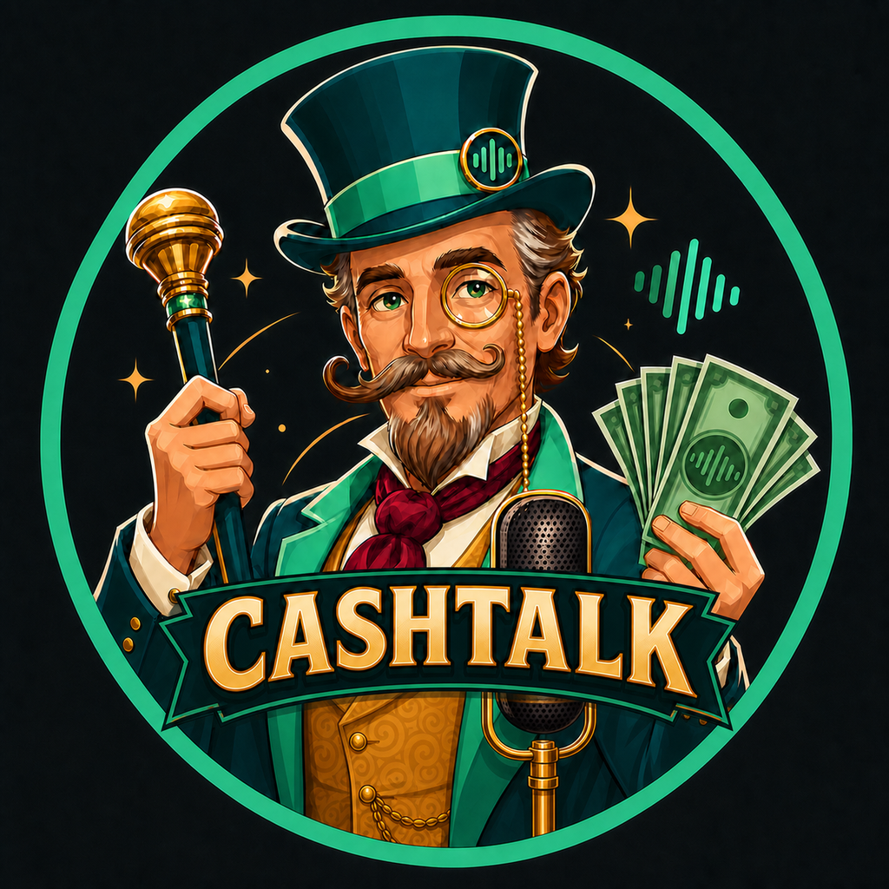

Расскажите
Запиши голосовое, напиши обрывками или отправь скриншот оплаты — как удобно сейчас.
«Вчера продукты на 2к рублей»Кошелёк, который живёт в Telegram
Остальное — не твоя забота. Надиктуй голосом, черкни пару слов или кинь скриншот перевода. Cashtalk сам поймёт сумму, валюту и категорию, запишет и посчитает статистику.

Почему бюджет обычно забрасывают
Ручная запись траты — открыть приложение, найти «+», выбрать категорию, счёт и валюту, вбить сумму, сохранить. Восемь таких записей превращаются в ежедневную рутину.
Запись траты становится обычным сообщением в мессенджере, который и так открыт.
Одно сообщение вместо формы
Запиши голосовое, напиши обрывками или отправь скриншот оплаты — как удобно сейчас.
«Вчера продукты на 2к рублей»Определит суммы, валюты, даты и категории. Даже если в одном сообщении сразу несколько трат.
2 000 RUB · Продукты · ВчераПокажет итог, запомнит твои категории и ответит, сколько ушло за неделю или месяц.
«Сколько я потратил за неделю?»Живая демонстрация
Нажмите на микрофон. Мы покажем, как обычная фраза превращается в финансовую запись.
«Такси 45 дирхам»
На примере живого диалога
Один поток можно разложить на несколько операций, сохранить разные валюты и уточнить способ оплаты обычной фразой.
47 долларов продукты, 3 200 рублей магазин и 85 дирхам такси
47 долларов продукты, 3 200 рублей магазин и 85 дирхам такси
А как отмечать наличные и карту?
Просто скажи словами: «наличные» или «с карты». Можно использовать значки 💵 и 💳.
Кофе 8 долларов с карты
💳 карта · сегодня
Наглядный туториал
Каждая карточка — реальный сценарий из чата. Скопируй фразу, отправь боту — получишь тот же результат.
Сленг, «примерно», «вчера» — всё понимает. Одно голосовое — несколько записей.
Скриншот перевода или фото чека — сумма, валюта и дата вытаскиваются сами. Дубль того же скриншота не запишется.
Наличные, карта и USDT — отдельные счета. Снятие в банкомате — перевод, а не трата.
Ошибся — просто скажи. Под каждой записью есть кнопки отмены и смены категории, а на правках бот учится.
Поставь месячный лимит на категорию — бот предупредит на 80% и при превышении, прямо в момент траты.
Аренда, подписки, школа — запишутся сами в нужный день, с напоминанием в чат.
Включи — и каждый вечер в 21:00 бот пришлёт итог дня. Без запросов и открывания приложений.
Одна команда — и вся история за год приходит CSV-файлом: открывается в Excel и Google Таблицах.
Спрашивай как человека — или командами. Сравнение с прошлым месяцем и разбивка по счетам — внутри.
/statsмесяц по категориям, сравнение с прошлым/weekитог недели/lastпоследние записи/undoотменить последнюю/balanceсальдо по счетам/budgetлимиты по категориям/recurрегулярные платежи/digestвечерняя сводка/exportвыгрузка CSV за годВсё, что умеет Cashtalk
Голос, текст и изображения сходятся в одной истории расходов — в оригинальных валютах и без ручной сортировки.
«Полторы тыщи», «2к», «косарь», «вчера» — сумма и дата будут правильными.
Список или поток сознания разложит на отдельные траты и категории.
Вытащит сумму, валюту и дату из перевода или фотографии чека.
Один раз сменишь категорию — следующие похожие траты попадут туда сами.
«Не 45, а 55» исправит последнюю запись. Ещё есть отмена и смена категории.
Узнаёт повторные сообщения и одинаковые изображения по отпечатку.
AED, RUB, USD, USDT — хранит оригинал и пересчитывает в базовую валюту.
Неделя, месяц, категории, сравнение периодов — командой или обычной фразой.
Telegram отправит накопленные сообщения после подключения, а бот их обработает.
Лимит на категорию — и предупреждение на 80% и при превышении, прямо в момент траты.
Аренда и подписки записываются сами в нужный день — с напоминанием в чат.
В 21:00 присылает сводку дня — траты, категории, сравнение. Включается одной командой.
/export — и вся история CSV-файлом. Твои данные — твои, без экспорт-подписок.
Один бот — разные жизни
Дирхамы, рубли, доллары, баты и USDT остаются в оригинале, а статистика сходится в одной валюте.
Скриншоты переводов и отдельные категории помогают не терять бизнес-расходы среди личных.
Каждый отправляет свои траты в общий поток — без вечернего восстановления чеков по памяти.
Не нужно формировать новую привычку: сообщение Cashtalk выглядит как обычный чат в Telegram.
Честное сравнение подходов
CoinKeeper и Monefy делают учёт красивым, Zenmoney — автоматическим. Cashtalk убирает сам момент «ведения бюджета».
| Возможность | Cashtalk | CoinKeeper / Monefy | Zenmoney |
|---|---|---|---|
| Где работает | В Telegram | Отдельное приложение | Отдельное приложение |
| Ввод траты | Голос, текст, скриншот | Ручной ввод | Импорт из банка* |
| Несколько трат сообщением | Да | Нет | Нет |
| Понимает живую речь | Да | Нет | Нет |
| Скриншот → запись | Да | Нет | Частично |
| Самообучение категорий | Да | Нет | Да |
| Защита от дублей | Да | Нет | Нет |
| Цена | Бесплатно | Подписка | Подписка |
* Импорт удобен, но требует подключения банковских данных к стороннему сервису и поддерживает не все банки. Cashtalk не просит доступ к банку.
Ты не ведёшь бюджет. Ты просто говоришь — бюджет ведётся сам.
Ваш ход
Не откладывай учёт на завтра. Отправь первую трату голосом, текстом или скриншотом — остальное Cashtalk сделает сам.
Начать бесплатно @Cashtalk_ai_bot · Без установки · Без доступа к банку